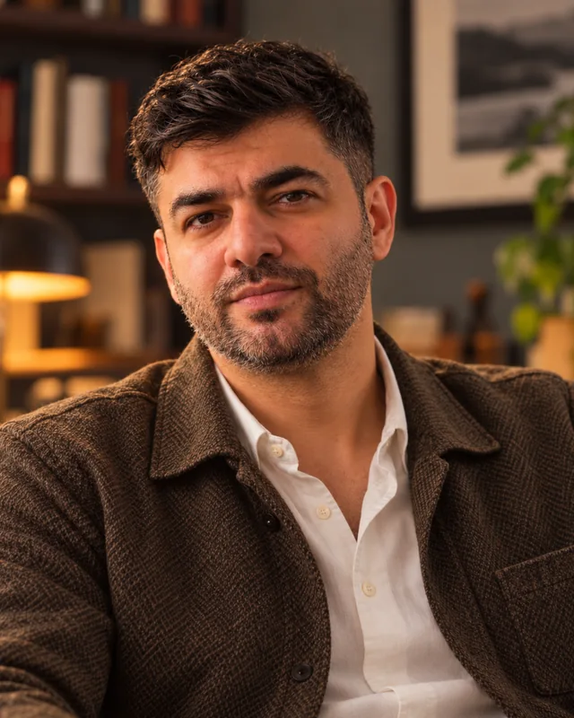

Software engineer at ASML. I've worked in AI for about fifteen years and I write and make videos about software, engineering culture and craftsmanship. Mostly in Turkish, sometimes in English.

Before industry I was an academic and an entrepreneur. I've lived and worked in five countries.